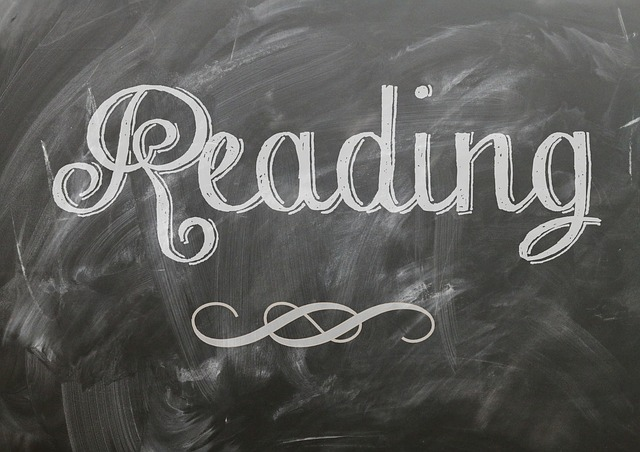
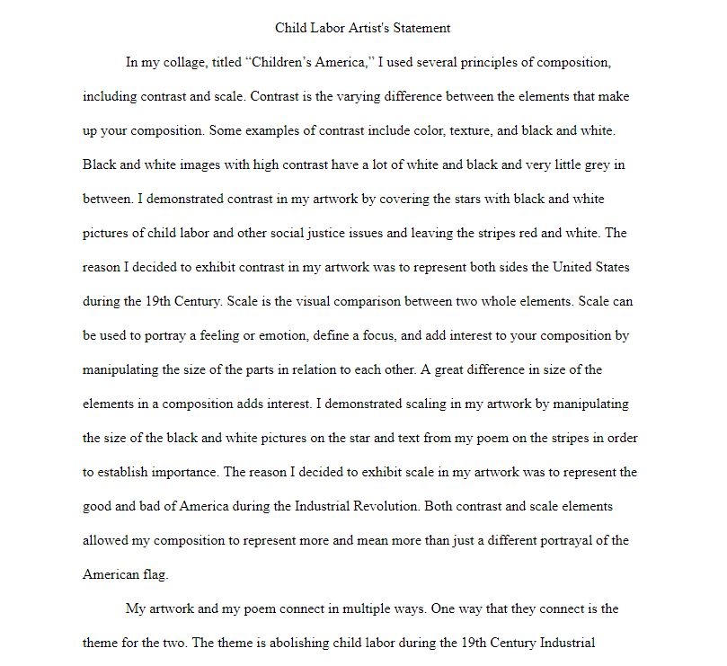
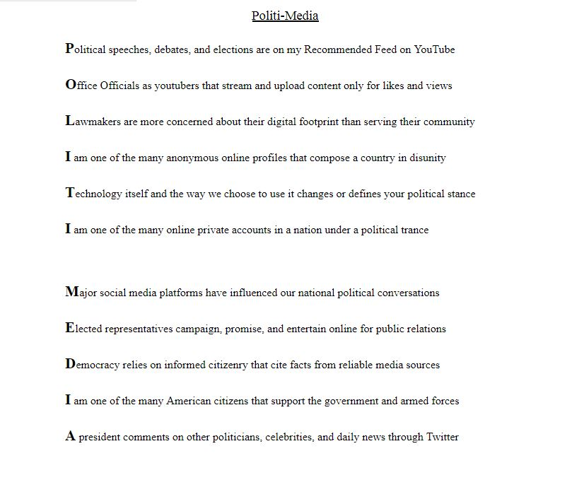
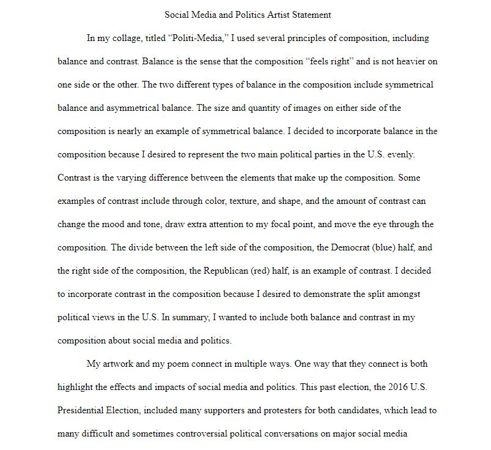
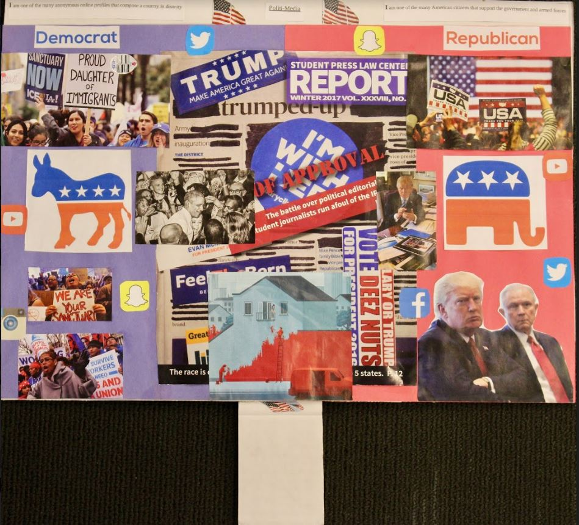

A Timely Solution Project

How has technology shaped and how does it continue to shape our human experience?
I will go back in time and research the Industrial Revolution and write a poem and construct a colllage about child labor in factories, mills, and workshops. Flash forwarding to the present day, I will research the influence of social media and politics to write a poem and construct a collage.
Child Labor Artist's Statement-

Social Media and Politics-
Social Media and Politics Poem-

Social Media and Politics Artist's Statement-

Social Media and Politics Collage-
